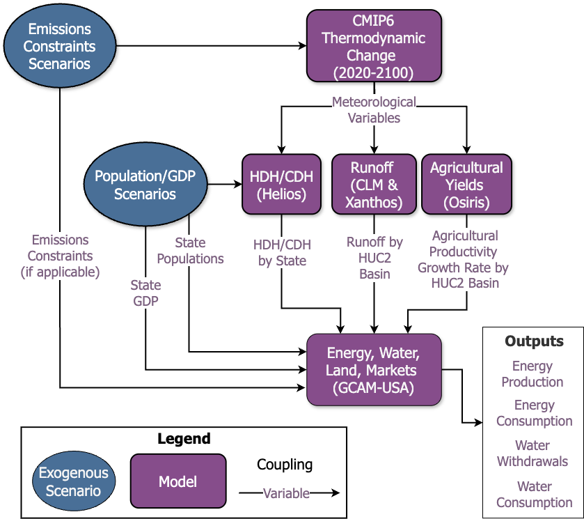

Methodology
Scenario Design
| GCAM-USA Scenario names | Emissions constraints | Degree of hotter and drier weather* | Population and economic growth |
|---|---|---|---|
| ModHotDry_LowPopGDP | Moderate | Moderately | Low |
| ModHotDry_HighPopGDP | Moderate | Moderately | High |
| SevHotDry_LowPopGDP | None | Severely | Low |
| SevHotDry_HighPopGDP | None | Severely | High |
*This dashboard shows IM3 GCAM-USA results driven by 21st century projections of future hourly meteorology derived from monthly thermodynamic signals from CMIP6 projections. In addition to distinguishing between moderately versus severely hotter and drier futures (largely driven by emissions scenario assumptions), the projections account for structural model uncertainties that cause the projections to be relatively cooler or hotter for a given emissions trajectory. This produces a total of four 21st century projections. In this dashboard, however, for tractability purposes, we present GCAM-USA results only from the relatively cooler projection models.
For additional information on the meteorological projections, please refer to: Jones, A.D., Rastogi, D., Vahmani, P., Stansfield, A., Reed, K.A., Thurber, T., Ullrich, P.A., & Rice, J.S. Continental United States climate projections based on thermodynamic modification of historical weather. Sci Data 10, 664 (2023). https://doi.org/10.1038/s41597-023-02485-5
GCAM-USA IM3 Experiment

For more information on IM3, please see https://im3.pnnl.gov
Global Change Analysis Model - USA
The Global Change Analysis Model (GCAM) Wiki (version 5.3): jgcri.github.io/gcam-doc/v5.3/toc.html
GCAM Modeling Outputs Underlying Visualizations: Zhao, M., Ahsan, H., Binsted, M., Patel, P., Rice, J. S., Snyder, A., Vernon, C. R., & Wild, T. B. (2024). GCAM-USA: IM3 Phase 2 Official Simulations (Version v1) [Data set]. MSD-LIVE Data Repository. doi:10.57931/2428940